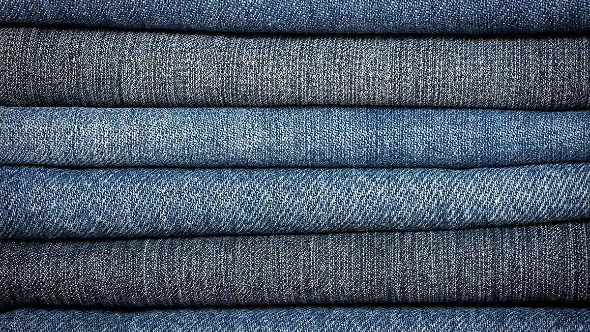

DERİ
DERİ
Öncelikle düzenli aralıklarla nemlendirici bir deri kremi kullanarak nemlendirin. Güneş ışığından koruyun ve aşırı sıcak veya nemli ortamlardan uzak tutun. Kirliyse, yumuşak bir bez veya fırça ile nazikçe temizleyin, kimyasal temizleyicilerden kaçının. Kullanmadığınız zamanlarda havalandırılmış, kuru bir yerde saklayın ve özellikle yağmurlu havalarda suya karşı koruyucu sprey kullanın.
PAMUK
Nazikçe temizlemek için hafif deterjan ve suyla silin, aşırı ovuşturmaktan kaçının. Güneş ışığından uzak tutun ve nemli ortamlardan koruyun. Leke oluştuğunda, hafif leke çıkarıcılar veya sabun kullanın, ardından temiz bir bezle kurulayın. Makinede yıkanabilirse, benzer renklerle ve soğuk suda yıkayın, üretici talimatlarını mutlaka takip edin. Tamamen kuruduktan sonra ütülemeyin, çünkü pamuklu kumaşlar genellikle ütü gerektirmeyebilir.
POLYESTER
Hafif kirler için nemli bir bezle silin, ağır lekeler içinse nazik bir deterjan kullanın ve bol su ile durulayın. Makinede yıkanabilirler, ancak yıkama talimatlarına göre soğuk veya ılık suda benzer renklerle yıkayın. Düşük ısıda kurutun ve ütülemek gerekiyorsa, düşük ısıda ters çevrilmiş olarak ütüleyin. Ürün üzerindeki etiket veya talimatları dikkatlice okuyun, çünkü bazı polyester ürünler özel bakım gerektirebilir.

DENİM
Leke oluştuğunda hızlıca yumuşak bir fırça veya nemli bezle silin, ağır lekeler içinse özel bir leke çıkarıcı kullanın. Makinede yıkanabilirse, ters çevrilmiş olarak ve soğuk suda benzer renklerle yıkayın, kurutma talimatlarına dikkat edin. Aşırı güneş ışığından uzak tutun, çünkü renk solması olabilir, ve doğrudan ısıdan kaçının. Ütü gerekiyorsa, düşük sıcaklıkta ters çevrilmiş olarak ütüleyin. Ürün üzerindeki talimatları takip etmek önemlidir, çünkü denim çeşitleri farklı bakım gereksinimlerine sahip olabilir.